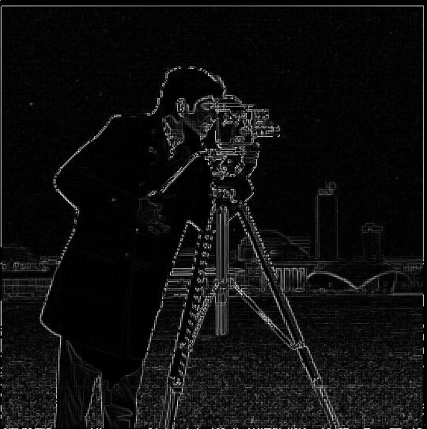
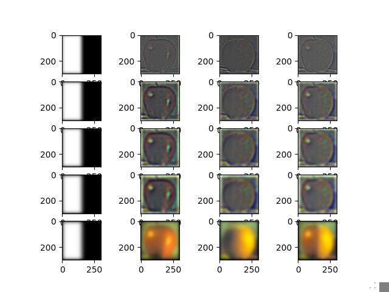

Project 2
Overview
For this project, we experiment with low-pass and high-pass filtering to sharpen blurry images and to also display hybrid images which appear differently when viewed close or at a distance. Further, we use Gaussian and Laplacian stacks, which contain different levels each of which encodes information about the frequencies that make up an image. Then, we can apply a mask at each level to integrate two images together seamlessly.
Filters
Finite Difference Operator
Using the finite difference operators, convolve the image with each derivative filter to obtain the partial derivatives with respect to x and y. Then, the gradient is simply the vector whose first component is the partial derivative along x and second component is the partial derivative along y. Of couse, we cannot plot this as an image, so we take its magnitude (Euclidean norm) and make an image. The magnitude gradient image has the edges of the original image.
| Derivative wrt to x-axis |
Binarized partial derivative |
| |
 |
| Derivative wrt to y-axis |
Binarized partial derivative |
 |
|
| Gradient |
Binarized Gradient |
|  |
|
Image "Sharpening"
Note that the landscape image below is very blurry, but the sharpening does quite a decent job at recovering details such as some of the branches in the top left and the shape of the trees.
| Taj Mahal |
Sharpened |
 |
|
| Landscape |
Sharpened |
| |
|
Blur an image and then resharpen. The differences between these two is that there are noticeable "grains" of the sharpened image. But it does look much better when compared to the blurred image.
| Blurred Original |
Sharpened |
| |
 |
Frequencies
Gaussian and Laplacian Stacks
| Orapple Stack |
The Orapple |
|  |
|